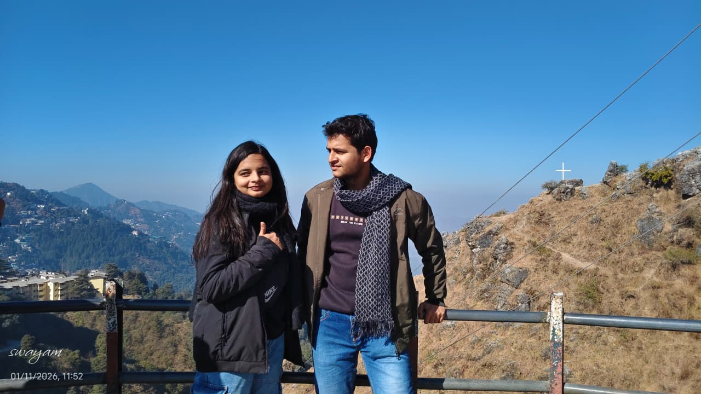
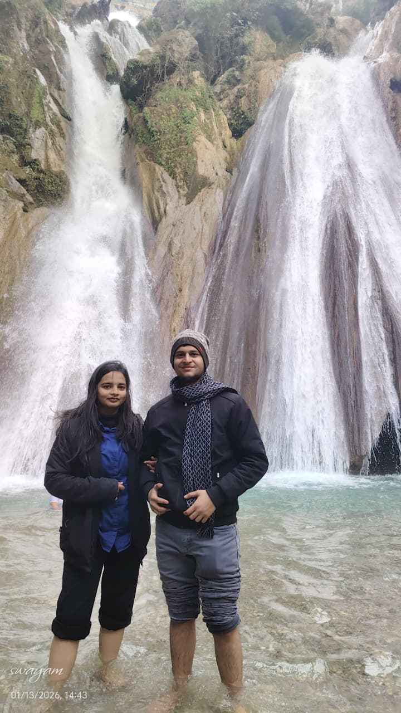

You don’t have to do anything to make me happy—just being around me is enough.


You are someone who brought a special kind of emotion into my life, something I might never experienced without you . You are really important to me, and you are truly a wonderful person.
I really love it when you prioritize me, even if just for a few seconds. It makes me feel loved, valued, and important in ways I can’t explain.
I admire how kind you are, how incredibly talented you are, and how you are always ready to help others. I love that you care about animals, nature, and especially mountains — just like me. You understand the value of money, food, and so many little things that truly matter.
I just hope you can always be as caring and attentive as you were in that van. I don’t ask for much. I love you so much, baby.